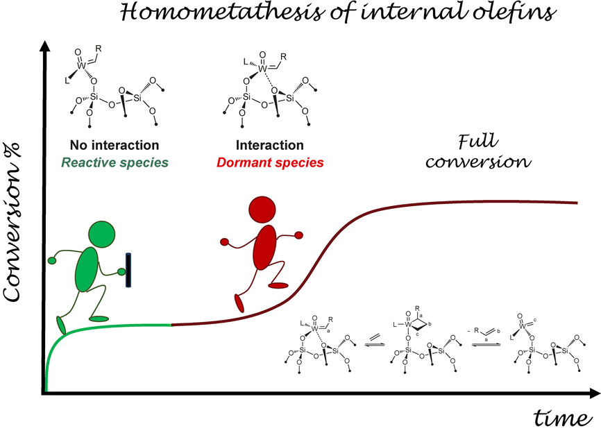

Research
A full list is available from the following Google Scholar profile.
Journal Articles
- D. Kim, S. Bhattacharjee, E. Lam, C. Casadevall, S. Rodriguez-Jimenez, E. Reisner Photocatalytic CO2 Reduction Using Homogeneous Carbon Dots with a Molecular Cobalt Catalyst. Small., 2024, 2400057
- A. Ramirez, E. Lam, D. P. Gutierrez, Y. Hou, H. Tribukait, L. M. Roch, C. Copéret, P. Laveille Accelerated exploration of heterogeneous CO2 hydrogenation catalysts by Bayesian-optimized high-throughput and automated experimentation. Chem Catal., 2024, 4, 100888
- E. Lam, S.R. Rodriguez-Jimenez, S. Bhattacharjee, E. Reisner Valorisation of lignocellulose and low concentration CO2 using a fractionation–photocatalysis–electrolysis process. Green Chem., 2023, 25, 10611
- S. Bhattacharjee, C. Guo, E. Lam, J.M. Holstein, M.R. Pereira, C.M. Pichler, C. Pornrungroj, M. Rahaman, T. Uekert, F. Hollfelder, E. Reisner Chemoenzymatic Photoreforming: A Sustainable Approach for Solar Fuel Generation from Plastic Feedstocks. J. Am. Chem. Soc., 2023, 145, 20355
- M. Rahaman, V. Andrei, D. Wright, E. Lam, C. Pornrungroj, S. Bhattacharjee, C.M Pichler, H. Greer, J. Baumberg, E. Reisner Solar-driven Liquid Multicarbon Fuel Production Using a Standalone Perovskite-BiVO4 Artificial Leaf. Nat. Energy, 2023, 8, 629
- P. Laveille, P. Miéville, S. Chatterjee, E. Clerc, J.-C. Cousty, F. de Nanteuil, E. Lam, E. Mariano, A. Ramirez, U. Randrianarisoa, K. Villat, C. Copéret, N. Cramer Swiss CAT+, a Data-driven Infrastructure for Accelerated Catalysts Discovery and Optimization. Chimia , 2023, 77, 154
- E. Lam, M. Miller, S. Linley, R.R. Manuel, I.A.C. Pereira, E. Reisner Comproportionation of CO2 and Cellulose to Formate Using a Floating Semiconductor-Enzyme Photoreforming Catalyst. Angew. Chem., Int. Ed., 2023, 62, e202215894
- S. Bhattacharjee, M. Rahaman, V. Andrei, M. Miller, S. Rodriguez-Jimenez, E. Lam, C. Pornrungroj, E. Reisner Photoelectrochemical CO2-to-fuel Conversion with Simultaneous Plastic Reforming. Nat. Synth., 2023, 2, 182
- C. Pichler S. Bhattacharjee, E. Lam, L. Su, A. Collauto, M. Rössler, S. Cobb, V. Badiani, M. Rahaman, E. Reisner Bio-electrocatalytic Conversion of Food Waste to Ethylene via Succinic Acid as the Central Intermediate. ACS Catal., 2022, 12, 13360
- S. Rodriguez-Jimenez, H. Song, E. Lam, D. Wright, A. Pannwith, S.A. Bonke, J.J. Baumberg, E. Reisner Self-Assembled Liposomes Enhance Electron Transfer for Efficient Photocatalytic CO2 Reduction. J. Am. Chem. Soc., 2022, 144, 9399
- M. Tanriver, Y.-C. Dzeng, S. Da Ros, E. Lam, J.W. Bode Mechanism-Based Design of Quinoline Potassium Acyltrifluoroborates for Rapid Amide-Forming Ligations at Physiological pH. J. Am. Chem. Soc., 2021, 143, 17557
- H. Zhou, Z. Chen, A.V. Lopez, E.D. Lopez, E. Lam, A. Tsoukalou, E. Willinger, D.A. Kuznetsov, D. Mance, A. Kierzkowska, F. Donat, P.M. Donat, A. Comas-Vives, C. Copéret, A. Fedorov, C.M. Müller Engineering the Cu/Mo2CTx (MXene) Interface to Drive CO2 Hydrogenation to Methanol. Nat. Catal., 2021, 4, 860
- E. Lam, E. Reisner A TiO2-Co(terpyridine)2 Photocatalyst for the Selective Oxidation of Cellulose to Formate Coupled to the Reduction of CO2 to Syngas. Angew. Chem., Int. Ed., 2021, 60, 23306
- S.R. Docherty, N. Phongprueksathat, E. Lam, G. Noh, O.V. Safonova, A. Urakawa, C. Copéret Silica-Supported PdGa Nanoparticles: Metal Synergy for Highly Active and Selective CO2-to-CH3OH Hydrogenation. JACS Au, 2021, 1, 450
- G. Noh, E. Lam, D.T. Bregante, J. Meyet, P. Sot, D.W. Flaherty, C. Copéret Lewis Acid Strength of Interfacial Metal Sites Drives CH3OH Selectivity and Formation Rates on Cu-Based CO2 Hydrogenation Catalysts. Angew. Chem., Int. Ed., 2021, 60, 9650
- E. Lam, G. Noh, K. Larmier, O.V. Safonova, C. Copéret CO2 Hydrogenation on Cu-catalysts Generated from ZnII Single-Sites: Enhanced CH3OH Selectivity Compared to Cu/ZnO/Al2O3. J. Catal., 2021, 394, 266
- E. Lam, G. Noh, K.W. Chan, K. Larmier, D. Lebedev, K. Searles, P. Wolf, O.V. Safonova, C. Copéret Enhanced CH3OH selectivity in CO2 Hydrogenation Using Cu-based Catalysts Generated via SOMC from GaIII Single-sites. Chem. Sci., 2020, 11, 7593
- L. Lätsch, E. Lam, C. Copéret Electronegativity and Location of Anionic Ligands Drive Yttrium NMR for Molecular, Surface and Solid-State Structures. Chem. Sci., 2020, 11, 6724
- M. Pucino, W.-C. Liao, K.W. Chan, E. Lam, R. Schowner, P. Zhikho, M. Buchmeiser, C. Copéret Metal-Surface Interactions and Surface Heterogeneity in “Well-Defined” Silica-Supported Alkene Metathesis Catalyst: Evidences and Consequences. Helv. Chim. Acta, 2020, 103, e2000072
- G. Noh, S.R. Docherty, E. Lam, X. Huang, D. Mance, J.L. Alfke, C. Copéret CO2 Hydrogenation to CH3OH on Supported Cu Nanoparticles: Nature and Role of Ti in Bulk Oxides vs Isolated Surface Sites. J. Phys. Chem. C, 2019, 123, 31082
- E. Lam, J.J. Corral-Pèrez, K. Larmier, G. Noh P. Wolf, A. Comas-Vives, A. Urakawa, C. Copéret CO2 Hydrogenation on Cu/Al2O3: Role of Metal/Support Interface in Driving Activity and Selectivity of a Bifunctional Catalyst. Angew, Chem., Int. Ed., 2019, 131, 14127
- E. Lam, K. Larmier, S. Tada, P. Wolf, O.V. Safonova, C. Copéret Zr(IV) Surface Sites Determine CH3OH Formation Rate on Cu/ZrO2/SiO2 – CO2 Hydrogenation Catalysts. Chinese J. Catal., 2019, 40, 1741
- G. Noh, E. Lam, J.L. Alfke, K. Larmier, K. Searles, P. Wolf, C. Copéret Selective Hydrogenation of CO2 to CH3OH on Supported Cu Nanoparticles Promoted by Isolated TiIV Surface Sites on SiO2. ChemSusChem, 2019, 12, 968
- K.W. Chan, E. Lam, V. D’Anna, F. Allouche, C. Michel, O.V. Safonova, P. Sautet, C. Copéret C-H Activation and Proton Transfer Initiate Alkene Metathesis Activity of the Tungsten (IV)-Oxo Complex. J. Am. Chem. Soc., 2018, 140, 11395
- E. Lam, C. Copéret Understanding Trends in 27Al Chemical Shifts and Quadrupolar Coupling Constant in Chloroalkyl Aluminum [AlClx(Me)3-x]n=1 or 2 Compounds. Helv. Chim. Acta, 2018, 101, e1800120
- E. Lam, K. Larmier, P. Wolf, S. Tada, O.V. Safonova, C. Copéret Isolated Zr Surface Sites on Silica Promote Hydrogenation of CO2 to CH3OH in Supported Cu Catalysts. J. Am. Chem. Soc., 2018, 140, 10530
- E. Lam, A. Comas-Vives, C. Copéret Role of Coordination Number, Geometry, and Local Disorder on 27Al NMR Chemical Shifts and Quadrupolar Coupling Constants: Case Study with Aluminosilicates. J. Phys. Chem. C, 2017, 121, 19946
- D.P. Estes, A.K. Cook, E. Lam, L. Wong, C. Copéret Understanding the Lewis Acidity of Co(II) Sites on a Silica Surface. Inorg. Chem., 2017, 56, 7731
- K. Larmier, W.-C. Liao, S. Tada, E. Lam, R. Verel, A. Bansode, A. Urakawa, A. Comas-Vivees, C. Copéret CO2-to-Methanol Hydrogenation on Zirconia-Supported Copper Nanoparticles: Reaction Intermediates and the Role of the Metal-Support Interface. Angew. Chem., Int. Ed., 2017, 129, 2358
- D. Martinez-Solorio, B. Belilo, L. Sanchez, Y. Liang, E. Lam, K.N. Houk, A.B. Smith III Design, Synthesis, and Validation of an Effective, Reusable Silicon-Based Transfer Agent for Room-Temperature Pd-Catalyzed Cross-Coupling Reactions of Aryl and Heteroaryl Chlorides with Readily Available Aryl Lithium Reagents. J. Am. Chem. Soc., 2016, 138, 1836
